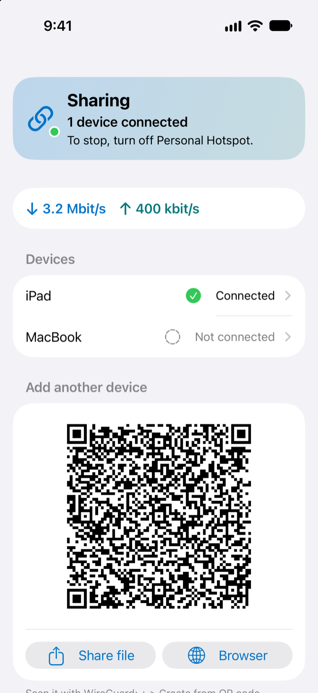
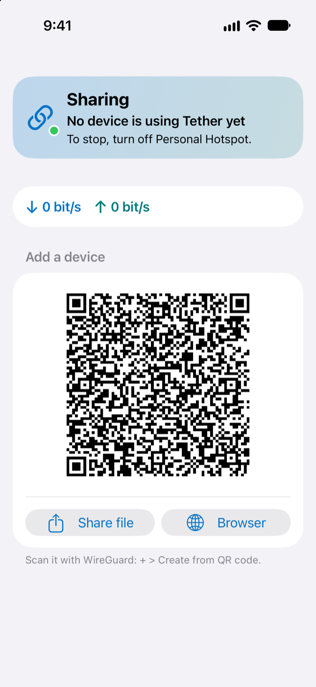

Why Tether
Lots of plans give the iPhone itself plenty of data, then cap, slow down or block Personal Hotspot. Tether makes every connection again on the iPhone, so your laptop's traffic counts as the phone's own.
Any device
If it runs WireGuard, it works. The free app is on Windows, macOS, Linux, Android, iPad and iPhone, and many travel routers have it built in.
Set up in a minute
A phone or tablet scans a QR code. A laptop opens a page on the hotspot and downloads its config, no camera needed.
Calls and games too
It's not only web pages. Video calls, games, streaming, downloads and SSH all go through.
No account, nothing in the cloud
Traffic goes from your devices to your iPhone and out. Tether talks to nothing else.
One tap to start
A shortcut turns on the hotspot and Tether together, from the Action button, a widget or Siri.
Free and open source
MIT licensed. Every release is built by GitHub Actions from its commit, and you can check the download.


How it works
Your device still joins the hotspot. Its WireGuard client hands the traffic to Tether, and Tether sends it out from the iPhone.
Tether runs a WireGuard server on the hotspot address. WireGuard's own code decrypts the traffic, and a small TCP/IP stack inside Tether (gVisor) makes each connection again from the iPhone. It only listens on the hotspot, and it only lets in devices you added.
Get started
You need an iPhone with iOS 17 or later and a plan with Personal Hotspot.
-
Install Tether on your iPhone
Tether isn't in the App Store. Install it with SideStore or AltStore, which you set up once from a Windows PC or a Mac. A free Apple ID is enough.
-
Turn on Personal Hotspot and open Tether
It shows a QR code for the first device.
-
Connect a device
Install the free WireGuard app and join the hotspot. A laptop opens
http://172.20.10.1and downloads its config. A phone or tablet scans the code. Then turn the tunnel on.
Tether hides where the traffic comes from, not what it is, and a carrier that looks closely can still notice. Many carrier contracts don't allow tethering workarounds. Check yours. Using Tether is your call and your risk. Good to know